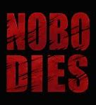
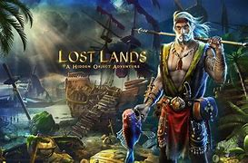
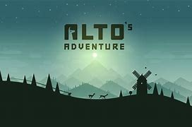

# NOBODIES
After the hitmen have taken out their target, somebody has to clear up the mess. That’s you. You’re a ‘cleaner’ for a secret government counter-terrorist organisation, tasked with disposing of the bodies, destroying all the evidence, and leaving no sign you were ever there. Nobodies is a point-and-click puzzle adventure in which you must use your wits and resourcefulness to ensure your employers’ actions go undiscovered. You aid them in taking out key members of Q-100, a terrorist organisation hell-bent on unleashing horrendous experimental bioweapons on the world. Blend in, get out, and most importantly, leave no bodies behind. Features • Eleven murders to cover up: quick thinking and resourcefulness is essential to succeed in hiding the evidence. • Packed with puzzles: each mission has a unique set of challenges to overcome, from classic inventory puzzles, to bespoke mindbending tasks. • Multiple ways to solve a challenge: various ways to approach many situations, some more effective than others • Hand-crafted art: almost one hundred distinct hand-drawn scenes to search and explore. • Inspired by real events: what if the horrific human experiments of the 50s and 60s got into terrorist hands?
# LOST LANDS 2
An exciting adventure of a brave girl who found herself in a fantasy world. She is forced to fight against the Black Horsemen sent by evil forces to annihilate every living thing. Lost Lands: the Four Horsemen is an adventurous hidden object game-quest with puzzles and mini-games that tells a fairy-tale story about the world with never-before-seen races and folk types. One fine day an ordinary good-looking housewife was walking down the car-park of a shopping center when she got into a cloud of mysterious fog turning out to be an interdimensional portal. As a result, Susan returns to the fantasy world of the Lost Lands she has been before. There has been a talk of her for years - the brave woman from another world is known as Susan the Warrior. This time it is a Druid hermit, whose name is Maaron, who called her on. He had a vision of liberation of the Lost Lands from the oppression of the Four Horsemen: Heat, Coldness, Death and Darkness. Maaron decides on to seek support of the woman from the other side; the one who has already saved the world from the forces of evil once. Susan will set forth towards the encounter with Four Horsemen with an aim to confront them. But first, she has to eliminate the Horsemen forever in an uphill battle by finding the weakness of each… Game features: • Explore over 50 stunning locations • Complete over 40 different mini-games • Challenge yourself with interactive hidden object scenes • Assemble collections, gather morphing objects, and gain achievements • The game is optimized for tablets and phones! Immerse yourself in an amazing adventure in a fantasy world Meet the peoples of the Lost Lands Solve dozens of puzzles Stop the Black Horsemen Save the world from a danger threatening to annihilate every living thing
# ALTOS'S ADVENTURE
Join Alto and his friends as they embark on an endless snowboarding odyssey. Journey across the beautiful alpine hills of their native wilderness, through neighbouring villages, ancient woodlands, and long-abandoned ruins. Along the way you'll rescue runaway llamas, grind rooftops, leap over terrifying chasms and outwit the mountain elders – all while braving the ever changing elements and passage of time upon the mountain. Features: • Fluid, graceful and exhilarating physics-based gameplay • Procedurally generated terrain based on real-world snowboarding • Fully dynamic lighting and weather effects, including thunderstorms, blizzards, fog, rainbows, shooting stars, and more • Easy to learn, difficult to master one button trick system • Chain together combos to maximize points and speed • Test your skills with 180 handcrafted goals • Discover six unique snowboarders, each with their own special attributes and abilities • Challenge your friends. Compete for best high score, best distance, and best trick combo! • Acquire the wingsuit from Izel’s workshop for an entirely new gameplay dynamic • Beautifully minimalist and evocative visual design • Original music and handcrafted audio for an ambient and immersive experience (headphones recommended!) Reviews: "A piece of interactive art" – WIRED "One of the best mobile games" – The Verge "Alto's Adventure demands your attention" – IGN "Best Looking Video Games of 2015" – TIME